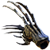

Открыть в интерактивной вики →
| Требуемый уровень | 60 |
|---|---|
| Редкость | Эпик |
| Улучшения | звёзды, орбы, осколки |
| Тип | Кастеты |
| Тип урона | Колющий |
| Цена | 3 000 000 |
| Ремонт | 1.2kk |
| Заряды | 3000 |
| Требуемый класс | Шид |
| Урон | 95 |
| Сила | 10 |
| Ловкость | 10 |
| Здоровье | 150 |
| Выносливость | 50 |
| Усиление дрифов | 60 |
Дроп
Боссы и Чемпионы
Модификаторы
Шанс попадания ближней атакой +3
Шанс критического удара +1.5
Дополнительные ОД +1
Шанс критического удара +1.5
Дополнительные ОД +1